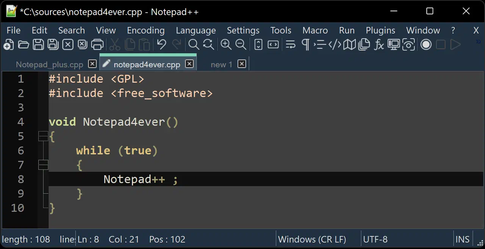
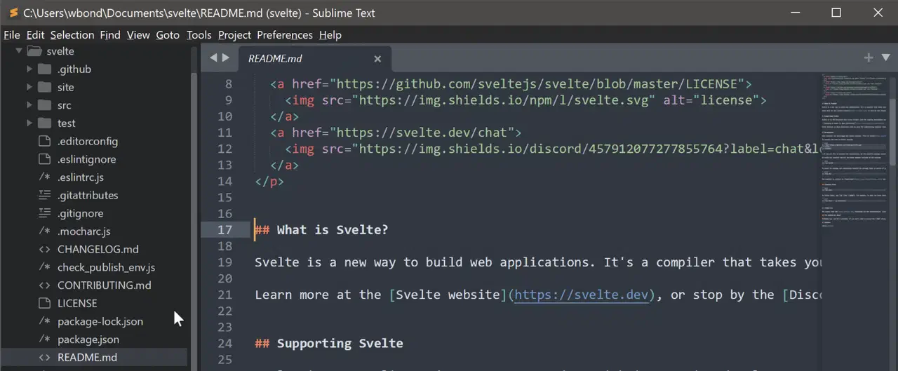
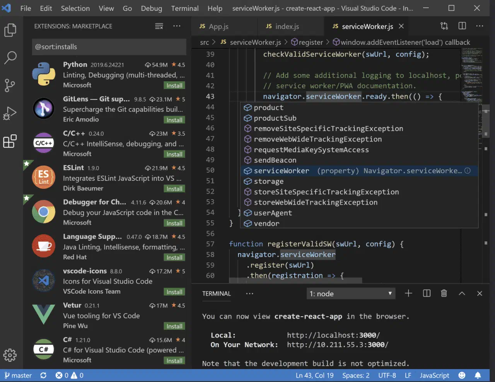
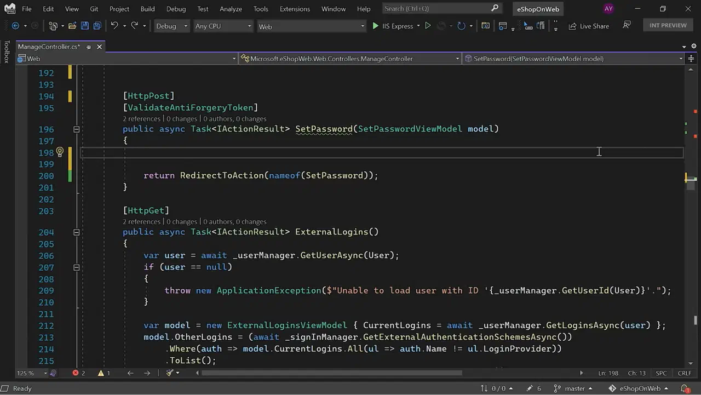
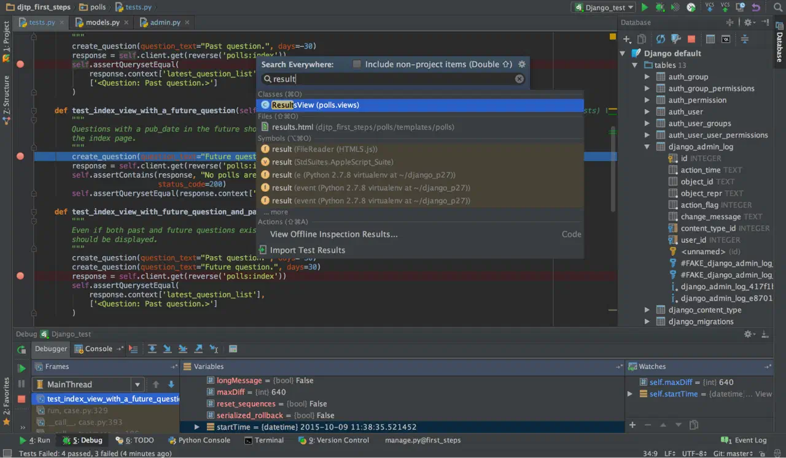

Топ 5 редакторов кода
1. Notepad++
Бесплатный, простой, универсальный, локальный Эту программу многие используют просто как «умный блокнот», то есть ведут в нём заметки, а не пишут код. Но он полезен и для программистов благодаря подсветке синтаксиса, быстрому поиску функций и навигации по коду. Для Notepad++ существуют десятки плагинов, которые добавляют дополнительные функции: автозаполнение, дебаггинг, автоматическую расстановку закрывающих скобок и кавычек. 2. Sublime Text
Платный, простой, универсальный, локальный Этот редактор для работы с кодом похож на Notepad++ простотой, минимумом базовых функций и облегчённым интерфейсом. Функций IDE в нём больше: есть поддержка быстрого переключения между файлами проекта, удобная навигация по коду и интеграция с Git для отслеживания версий программы.
3. Visual Studio Code
Бесплатный, простой, универсальный, локальный Редактор кода, который практически «дорос» до IDE. В него сразу встроено умное дополнение, контроль версий, инструменты для рефакторинга, то есть упрощения кода, удобная навигация. VS Code поддерживает тысячи плагинов, которые позволяют автоматизировать многие рабочие процессы, например работу с контейнерами, которую применяют при разработке больших современных приложений.
4. Visual Studio
Условно-бесплатный, IDE, не совсем универсальный, локальный Полноценная IDE, в которую встроен компилятор, продвинутый искусственный интеллект для автозаполнения и другие инструменты для работы над большими сложными проектами. Лучше всего Visual Studio работает с языками С, С++ и С#. Есть и поддержка Python, PHP, JavaScript, HTML, CSS и других языков.
5. PyCharm
словно-бесплатный, IDE, специализированный, локальный Эта IDE разработана специально для тех, кто пишет на Python. В PyCharm есть встроенный отладчик и терминал, интерпретатор, интеграция с системами контроля версий и инструментами для аналитики данных и машинного обучения.
